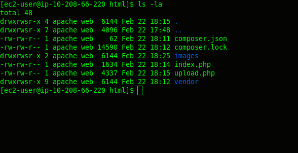

AWS RDS, EC2, S3, EFS
Contents
Introduction
This demonstration expands the typical LAMP (Linux, Apache, MySQL, PHP) Stack to use AWS features to increase redundancy and resiliency.
Although the code is relatively simple, the same mechanisms can be used for sites using CMS systems like Drupal or Wordpress.
When OIT provision an account in AWS, we create a Main VPC (virtual private cloud) divided into a number of subnets. We categorize those subnets as follows:
- Public - resources placed in these subnets are accessible from the Internet.
- Private - resources placed in these subnets have Internet access via NAT (network address translation) but are not visible from the Internet.
- Data - resources placed in these subnets have no access to or from the Internet.
There is more than one of each category of subnet, as they are places in different availability zones (AZs), which is the AWS way of saying different data centers spread across different
geographical regions for increased redundancy.
Glossary
RDS
Amazon Relational Database Service (Amazon RDS) makes it easy to set up, operate, and scale a relational database in the cloud. It provides cost-efficient and resizable capacity while automating time-consuming administration tasks such as hardware provisioning, database setup, patching and backups. It frees you to focus on your applications so you can give them the fast performance, high availability, security and compatibility they need. [https://aws.amazon.com/rds/]
EC2
Amazon Elastic Compute Cloud (Amazon EC2) is a web service that provides secure, resizable compute capacity in the cloud. [https://aws.amazon.com/ec2/]
S3
Amazon Simple Storage Service (Amazon S3) is the largest and most performant, secure, and feature-rich object storage service. With Amazon S3, organizations of all sizes and industries can store any amount of data for any use case, including applications, IoT, data lakes, analytics, backup and restore, archive, and disaster recovery. Amazon S3 is designed for 99.999999999% durability to protect data from site-level failures, errors, and threats, so that it is available to your end users and applications at all times. [https://aws.amazon.com/s3/]
EFS
Amazon Elastic File System (Amazon EFS) provides a simple, scalable, elastic file system for Linux-based workloads for use with AWS Cloud services and on-premises resources. It is built to scale on demand to petabytes without disrupting applications, growing and shrinking automatically as you add and remove files, so your applications have the storage they need – when they need it. It is designed to provide massively parallel shared access to thousands of Amazon EC2 instances, enabling your applications to achieve high levels of aggregate throughput and IOPS with consistent low latencies. Amazon EFS is a fully managed service that requires no changes to your existing applications and tools, providing access through a standard file system interface for seamless integration. [https://aws.amazon.com/efs/]
IAM
AWS Identity and Access Management (IAM) enables you to manage access to AWS services and resources securely. Using IAM, you can create and manage AWS users and groups, and use permissions to allow and deny their access to AWS resources. [https://aws.amazon.com/iam/]
Step 1. Create Security Groups in the Main VPC
In order for traffic to reach our resources, we need to create security groups that permit that traffic. As we will be placing all of our resources in the Main VPC, we need to make sure we create them in the correct VPC so they are
available for us to use.
- Create Security Group with port 22 [ssh] access from BYU and port 80 [http] access from the world.

- Create Self Referencing Security Group with port 3306 [mysql] and port 2049 [nfs] access

Step 2. Create an EFS Mount in the Main VPC
EFS is a Network File System (NFS) that we can attach to as many virtual machines (EC2 instances) as we need. This will enable all of our EC2 instances to operate off of the same code base.
Create the EFS in the same subnets as the EC2 instances that will use it - in our case, the two Public subnets.
Attach the self referencing Security Group. (we will also attach this group to our EC2 instances to allow them access to the EFS)
Step 3. Create a Public S3 Bucket
Our code will take uploaded files, store them, and reference them from an S3 Bucket.
- Create an S3 Bucket named kempy-bootcamp-bucket (the name must be unique throughout all AWS)
- Turn off the Public blocks (we want it to be a Public Bucket)
- Add a public read access policy
{
"Version":"2012-10-17",
"Statement":[
{
"Sid":"AddPerm",
"Effect":"Allow",
"Principal": "*",
"Action":["s3:GetObject"],
"Resource":["arn:aws:s3:::kempy-bootcamp-bucket/*"]
}
]
}
Step 4. Create an IAM Role for EC2 to access S3
Uploading to an S3 bucket requires permissions. These permissions can be granted by creating an IAM User and hard coding the user keys into our application. A more secure way of granting this access is
by creating an S3 Access Role and attaching that role to our EC2 instances.
- Create an IAM Role kempy-s3-access

- Attach an inline policy (kempy-inline-bucket-policy) with access to our S3 Bucket
{
"Version": "2012-10-17",
"Statement": [
{
"Sid": "VisualEditor0",
"Effect": "Allow",
"Action": "s3:*",
"Resource": [
"arn:aws:s3:::kempy-bootcamp-bucket/*",
"arn:aws:s3:::kempy-bootcamp-bucket"
]
}
]
}
Step 5. Create a MySQL RDS Database
- Create a MySQL DB with a replica in a different AZ
- Name the DB Instance and create a master username and password

- Put it in the Main VPC in the main-db-subnet-group. Attach the self referencing Security Group. (There is no need to add a database at this stage as we will connect to our DB instance from our EC2 instance and add the database and database table then.)

- Once the instance is created, note the instance end-point. [ kempy-mysql.crzc9xds3qkq.us-west-2.rds.amazonaws.com ]

Step 6. Create EC2 Instances
I came across a few gotchas when creating the EC2 instance, mainly due to the AWS PHP SDK (the code used by PHP to connect with AWS resources via their API). The most up to date SDK (with the best documentation) requires at least PHP 5.5. The first AMI (Amazon Machine Images) I used to install my EC2 instance only have PHP 5.4.
- Launch an EC2 Instance [Amazon Linux AMI 2018.03.0 (HVM), SSD Volume Type - ami-01e24be29428c15b2 ]

- Add it to a Public Subnet in the Main VPC

- Add the Security Group we created earlier - we'll also need to attach the 2nd security group (the self referencing one) but can only attach one when we create the instance.

- Attach self referencing Security Group

- Attach IAM Role


Configure EC2 Instances
- Update and Install Software - Apache (httpd), PHP 5.5, MySQL (to access our database)
sudo yum update -y
sudo yum -y install httpd24
sudo yum -y install php55 php55-mysqlnd php55-xml php55-mcrypt php55-mbstring php55-cli php55-gd
sudo yum -y install mysql
sudo chkconfig httpd on
sudo service httpd start
- Connect to MySQL RDS Instance and configure database and database user

mysql -h kempy-mysql.crzc9xds3qkq.us-west-2.rds.amazonaws.com -u iamgroot -p
CREATE DATABASE mydb;
CREATE USER 'dbuser'@'%';
SET PASSWORD FOR 'dbuser'@'%'=PASSWORD("XesAchollPanancedBleInts");
GRANT ALL PRIVILEGES ON mydb.* TO 'dbuser'@'%' IDENTIFIED BY 'XesAchollPanancedBleInts';
CREATE TABLE mydb.images (
id int NOT NULL AUTO_INCREMENT,
image_name varchar(255) DEFAULT NULL,
image_type varchar(255) DEFAULT NULL,
image_s3_key varchar(255) DEFAULT NULL,
image_s3_url varchar(255) DEFAULT NULL,
thumb_s3_key varchar(255) DEFAULT NULL,
thumb_s3_url varchar(255) DEFAULT NULL,
description varchar(2048) DEFAULT NULL,
PRIMARY KEY (id)
);
- Add ec2-user to a web group and set web directory settings
sudo groupadd web
sudo usermod -a -G web ec2-user
sudo chown -R apache:web /var/www
sudo find /var/www -type d -exec chmod u=rwx,g=rwxs,o=xr '{}' \;
sudo find /var/www -type f -exec chmod u=rw,g=rw,o=r '{}' \;
- Mount the EFS file system at the web root /var/www/html
sudo yum install -y amazon-efs-utils
sudo mount -t efs fs-7a0022d2:/ /var/www/html
sudo vim /etc/fstab
#Add the following line to the fstab
fs-7a0022d2:/ /var/www/html efs defaults,_netdev 0 0
- Add Composer to install the AWS SDK PHP

cd ~
curl -sS https://getcomposer.org/installer | php
sudo mv composer.phar /usr/local/bin/composer
cd /var/www/html
/usr/local/bin/composer require aws/aws-sdk-php
- Allow for bigger file uploads in the php.ini
sudo vim /etc/php.ini
# Edit the following lines
upload_max_filesize = 32M
post_max_size = 32M
sudo service httpd restart
- Create an Images directory in /var/www/html and upload index.php and upload.php

- Test at http://ec2-34-217-206-91.us-west-2.compute.amazonaws.com/
{kind=link}
{kind=link}
{kind=link}
{kind=link}
{kind=link}
{kind=link}
{kind=link}